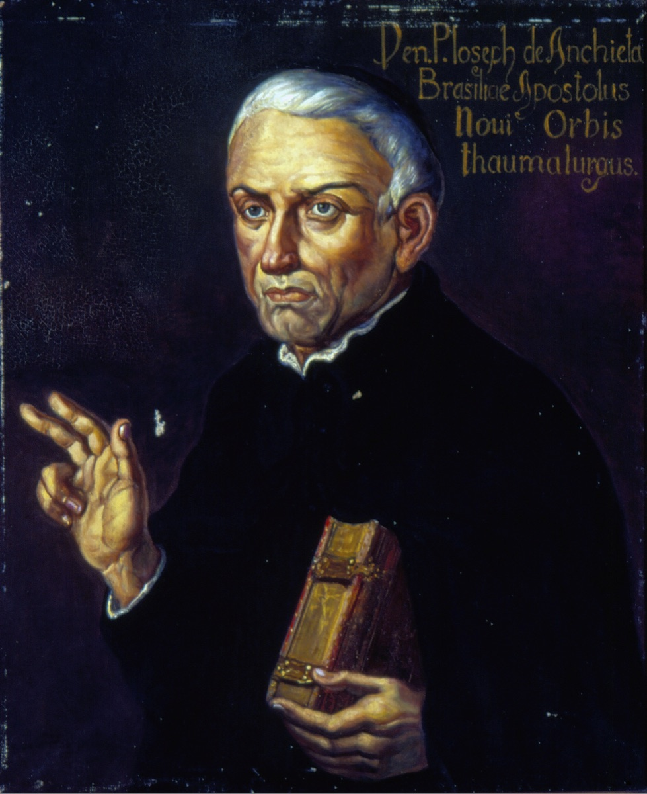

Misionari, pastiri i mistici (Pojedinačna proglašenja)
Misionar · Svećenik · Pisac
Sv. Josip de Anchieta
1534. – 1597.
Misionar, učitelj i pisac gotovo je čitav redovnički život proveo u Brazilu. Učio je domorodačke jezike, sastavljao poučne tekstove i sudjelovao u nastanku zajednica iz kojih se razvio São Paulo.

Izvor slike
- Spomendan
- 9. lipnja
- Zaštitništvo
- Nije navedeno u izvoru
- Životni vijek
- 1534. – 1597.
- Djelovanje
- Misije i evangelizacija · Obrazovanje i poučavanje vjere · Pisanje, znanost i umjetnost · Dijalog i pomirenje
- Razdoblje
- 16. stoljeće
- Slavi se
- 9. lipnja
Životopis
Josip de Anchieta proveo je gotovo sav svoj redovnički život u Brazilu. Isusovački misionar, učitelj i pisac, učio je jezik ljudi kojima je propovijedao te je u njemu sastavljao tekstove za vjersku pouku. Njegova su gramatika, pjesme, drame i pisma ostali važan dio brazilske kulturne povijesti. Istodobno je djelovao u kolonijalnom društvu obilježenom ratovima, porobljavanjem i sukobljenim interesima europskih doseljenika i domorodačkih naroda. Njegovo misionarsko poslanje bilo je duboko povezano s tim teškim i proturječnim okolnostima.
Rodio se 19. ožujka 1534. u San Cristóbalu de La Laguni na otoku Tenerifeu, u imućnoj obitelji. Na školovanje je kao mladić otišao u portugalsku Coimbru. Ondje je stekao humanističku naobrazbu i dobro poznavanje latinskoga, jezika na kojem će poslije pisati i velika pjesnička djela. U Družbu Isusovu stupio je 1. svibnja 1551. Redovničku je pripravu započeo u vrijeme kad se mlada družba širila i slala svoje članove u daleke misije. Anchietino zdravlje, međutim, bilo je krhko, a tegobe s kralježnicom pratile su ga i poslije.
Godine 1553. poslan je u Brazil. Očekivalo se i da bi mu tamošnje podneblje moglo koristiti zdravlju. Prelazak oceana značio je početak života koji se neće vratiti u europske okvire njegova školovanja. U Brazilu su ga čekali dugi putovi, skromne nastambe, poučavanje i učenje novih jezika. Isusovačko djelovanje uključivalo je susrete s domorodačkim stanovništvom, rad među doseljenicima i osnivanje škola. Anchieta je u taj posao ušao još prije svećeničkoga ređenja, oslanjajući se na obrazovanje koje je donio iz Coimbre, ali i na ono što je tek morao naučiti od ljudi među kojima je živio.
S Manuelom da Nóbregom i drugim isusovcima sudjelovao je u početku misije na visoravni Piratininga. Ondje je 25. siječnja 1554., na blagdan Obraćenja svetoga Pavla, slavljena misa koja je povezana s osnutkom budućega São Paula. Skromno misijsko i školsko središte postalo je polazište jednoga od najvećih brazilskih gradova. Anchietin je neposredni posao tada bio poučavanje. U pismu iz Piratininge iz 1554. opisuje školu za dječake i vjeronauk na portugalskom i domaćem jeziku. Predavao je i gramatiku svojoj subraći, a istodobno je učio jezik starotupi. Učitelj je tako morao biti i učenik: bez poznavanja toga jezika nije mogao jasno prenositi sadržaj vjere ni razumjeti ljude kojima se obraćao.
Učenje starotupijskoga jezika preraslo je u sustavan jezikoslovni rad. Anchieta je proučavao njegove oblike i pravila te sastavio gramatiku koja je tiskana u Coimbri 1595. pod naslovom Arte de gramática da língua mais usada na costa do Brasil. Nije ostao samo pri priručniku za druge misionare. Na jeziku kojim je govorio dio domorodačkoga stanovništva sastavljao je katehetske dijaloge i tekstove za pripremu krštenja i ispovijedi. Pouka je tako bila povezana sa sakramentalnim životom onih koji su primali kršćansku vjeru. Njegov se rad odvijao na više razina: u susretu i razgovoru, u školi i vjeronaučnoj pouci, ali i u pažljivom zapisivanju jezika koji europskim redovnicima nije bio poznat.
Za katehezu se služio i kazalištem. Pisao je pobožne drame koje su izvodili domaći stanovnici i doseljenici, često uz crkvena slavlja. U njima je povezivao starotupi, portugalski, španjolski i latinski, prilagođavajući oblik pouke publici kojoj je bio namijenjen. Pjesma, izvedba i vjerski sadržaj bili su dio istoga nastojanja da se kršćanski nauk približi slušanjem i gledanjem, a ne samo učenjem pisanoga teksta. Te drame pripadaju početcima brazilske književnosti, ali su za Anchietu ponajprije bile dio konkretnoga misionarskog rada.
Taj se rad nije odvijao izvan političkih sukoba. Portugalsko osvajanje, pokušaji porobljavanja domorodačkoga stanovništva i francusko-portugalsko suparništvo dovodili su do ratova i sklapanja saveza u kojima su sudjelovali različiti domorodački narodi. Anchieta i Nóbrega protivili su se nasilju i postupanju kolonista prema njima, ali su ujedno podupirali portugalsku vlast nasuprot francuskoj. Njihovo posredovanje stoga nije značilo izdvojenost iz kolonijalnoga poretka. Anchietini spisi također nose obilježja europskoga i misionarskoga pogleda njegova vremena, uključujući opravdavanje postupaka koje se ne može svesti na miroljubivu razmjenu među kulturama.
Godine 1563. Anchieta i Nóbrega sudjelovali su u mirovnim pregovorima s pripadnicima saveza Tamoyo u Iperoigu. Anchietino poznavanje jezika bilo je važno za sporazumijevanje. Ondje je ostao kao talac dok su se pregovori nastavljali. Uz taj se boravak veže predaja o nastanku njegove latinske pjesme u čast Blažene Djevice Marije, De Beata Virgine Dei Matre. Prema toj je predaji, u nedostatku papira stihove pisao u pijesku i pamtio ih, a poslije ih zapisao. Velika marijanska pjesma svjedoči o drugoj strani njegova pisanja: uz jezične priručnike i tekstove za javnu pouku stvarao je i djela izričito posvećena pobožnosti.
Za svećenika je zaređen 1566. Njegovo je djelovanje bilo povezano i s početcima Rio de Janeira te s tamošnjim isusovačkim kolegijem. Nakon Nóbregine smrti preuzeo je odgovornost u toj zajednici. Putovao je između različitih misijskih središta, propovijedao i pomagao u održavanju isusovačkoga rada. Kretanje između naselja često je tražilo duga putovanja pješice ili brodom. Slabo zdravlje nije ga oslobodilo tih zadaća, a njegove su službe s vremenom uključivale sve više odgovornosti za druge redovnike i njihove ustanove.
Godine 1577. postao je provincijal Družbe Isusove u Brazilu. Služba poglavara značila je brigu za zajednice i njihove različite poslove, od škola i kolegija do udaljenih misija. Anchieta je pritom nastavio pisati. U pismima i izvještajima opisivao je ljude, događaje, običaje, prirodu i uvjete misionarskoga života. Ti tekstovi čuvaju mnogo podataka o Brazilu šesnaestoga stoljeća. Ne odvajaju, međutim, promatranje od svrhe zbog koje ih je sastavljao: njihovi opisi dolaze od redovnika koji želi širiti kršćansku vjeru i izvijestiti svoje poglavare o njezinu napredovanju i zaprekama.
Među njegovim latinskim djelima nalazi se i ep De gestis Mendi de Saa, posvećen djelovanju portugalskoga upravitelja Mem de Sáa. Djelo pokazuje koliko su se u tadašnjoj književnosti mogli ispreplesti kršćanski jezik i veličanje kolonijalnih pobjeda. Anchietina književna ostavština stoga nije jednolična: obuhvaća marijansku pobožnost, školski i katehetski rad, jezikoslovlje, povijesne izvještaje i pohvalu kolonijalnoga pothvata.
Nakon provincijalske službe obavljao je i druge poglavarske dužnosti. Godine 1595. oslobođen je upravnih odgovornosti. Posljednje godine života proveo je narušena zdravlja. Umro je 9. lipnja 1597. u Reritibi, u današnjoj brazilskoj saveznoj državi Espírito Santo. Iza njega su ostale zajednice u kojima je poučavao i služio, kao i opsežan pisani rad na više jezika. U Brazilu je živio više od četiri desetljeća, od mladoga isusovca poslanoga preko oceana do svećenika i nekadašnjega provincijala čiji su rukopisi nastavili kružiti i nakon njegove smrti.
Papa Ivan Pavao II. proglasio ga je blaženim 22. lipnja 1980., a papa Franjo svetim 3. travnja 2014. postupkom ekvivalentne kanonizacije. Spomendan mu je 9. lipnja. Crkva ga pamti kao misionara čija je služba uključivala poučavanje, poznavanje jezika i postojanost unatoč tjelesnoj slabosti. Njegov život ostaje vezan uz početke brazilskih crkvenih i obrazovnih ustanova, ali i uz složenu povijest zemlje u kojoj je proveo gotovo cijeli svoj apostolat.
Pročitaj više na izvornoj stranici ↗